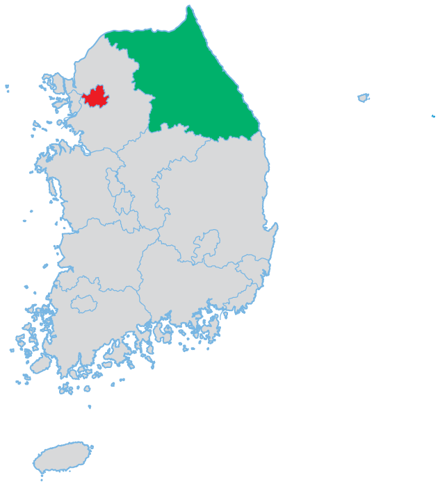

- 표
- 물음 1
- 물음 2
- 물음 3
-

지역 서울 강원도 인구(명) 9857000 1550000 넓이(㎢) 9857000 1550000 (출처: 지방 자치 단체 행정 구역 및 인구 현황, 행정 안전부, 2017.)
-
서울의 넓이에 대한 인구의 비율은 얼마인가요?
16293 -
강원도의 넓이에 대한 인구의 비율은 얼마인가요?
92 -
두 지역 중 인구가 더 밀집한 곳은 어디인가요? 이유를 이야기해 보세요.
서울예넓이에 대한 인구의 비율이 더 높기 때문입니다.